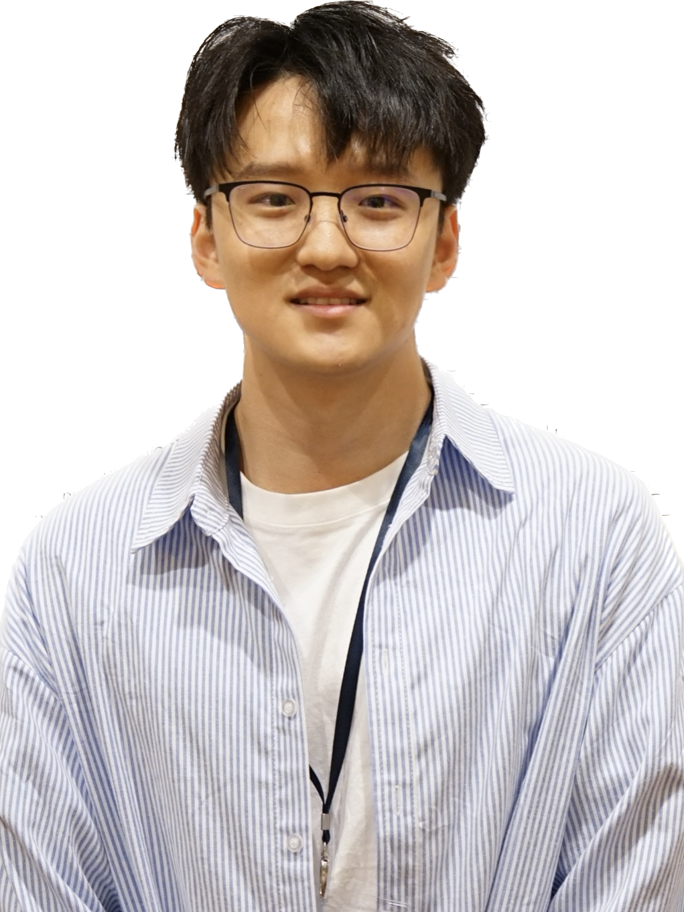

|  |
|
I am currently a first year CS PhD student at Cornell University. Previously, I was a research assitant at Carnegie Mellon University supervised by Prof. Zhihao Jia. I obtained master degree at Tsinghua University supervised by Prof. Yong Jiang. My research interests include data stream structure and algorithms design, programmable switches, machine learning, and large language models. I received my Bachelor's degree at the CS department of Xidian University, where I was supervised by Prof. Yuesheng Xu.
Zhengxin Zhang, Dan Zhao, Xupeng Miao, Gabriele Oliaro, Qing Li, Yong Jiang, and Zhihao Jia. “Quantized Side Tuning: Fast and Efficient Tuning of Quantized Large Language Models.” The 62nd Annual Meeting of the Association for Computational Linguistics (ACL), August 2024. Oral presentation. Outstanding Paper Award.
Zhengxin Zhang, Yucheng Huang, Guanglin Duan, Qing Li, Dan Zhao, Yong Jiang, Lianbo Ma, Xiao Xi, and Hengyang Xu. “Metis: Understanding and Enhancing Regular Expressions in Network.” Neural Information Processing Systems (NeurIPS), December 2023.
Zhengxin Zhang, Qing Li, Guanglin Duan, Dan Zhao, Jingyu Xiao, Guorui Xie, and Yong Jiang. “Pontus: Finding Waves in Data Streams.” ACM SIGMOD International Conference on Management of Data (SIGMOD), June 2023.
Zhengxin Zhang, Guanglin Duan, Yucheng Huang, Qing Li, Dan Zhao, and Yong Jiang. “Regular Expression Matching in the Data Plane.” Under review.
Guanglin Duan, Qing Li, Zhengxin Zhang, Dan Zhao, Guorui Xie, and Yong Jiang. “DNSGuard: In-network Defense against DNS Attacks.” IEEE Transactions on Dependable and Secure Computing (TDSC), July 2024.
Jingyu Xiao, Qing Li, Zhengxin Zhang, Dan Zhao, and Yong Jiang. “Graph-based Multi-Task Learning Framework for Model Generalization across Network Topologies.” Under review.
Qing Li, Ruoyu Li, Yucheng Huang, Qingsong Zou, Dan Zhao, Zhengxin Zhang, and Yong Jiang. “SeIoT: Smart Home Network Anomaly Detection via Knowledge Graph.” IEEE Transactions on Information Forensics and Security (TIFS), July 2024.
| 2024-now | Ph.D. in Computer Science, Cornell University |
| 2021-2024 | M.S. in Computer Science and Engineering, Tsinghua University |
| GPA 3.88/4 | |
| 2017-2021 | B.S. in Software Engineering, Xidian University |
| GPA 3.86/4, Rank 2/110 | |
| 2023-2024 | Visiting scholar in Computer Science supervised by Prof. Zhihao Jia, Carnegie Mellon University |
ACL Outstanding Paper Award 2024
First Prize Scholarship 2022, 2023 Tsinghua University
Second Place, Intel® 2022 P4 China Hackathon
Outstanding Graduates, Ministry of Education of Shaanxi Province
Outstanding Student 2018, 2019, 2020, Xidian University
National Scholarship 2020, Ministry of Education of the People’s Republic of China
First Prize Scholarship 2018, 2019, Xidian University
First Prize (selected for excellent papers, winning rate 0.036‰) 2019, China Undergraduate Mathematical Contest in Modeling
First Prize 2019, Xidian University Mathematical Modeling Contest
Meritorious Winner 2018, International Mathematical Contest in Modeling
| Jun 2023 to Aug 2024 | Research assistant at Carnegie Mellon University supervised by Prof. Zhihao Jia |
| Topic: Machine learning and large language models |
|
| Sep 2022 to Aug 2023 | Internship at Tencent, Shenzhen, China |
| Topic: XDP and eBPF algorithm design |
Tencent: Regular Expressions in the Data Plane. Dec 2023.